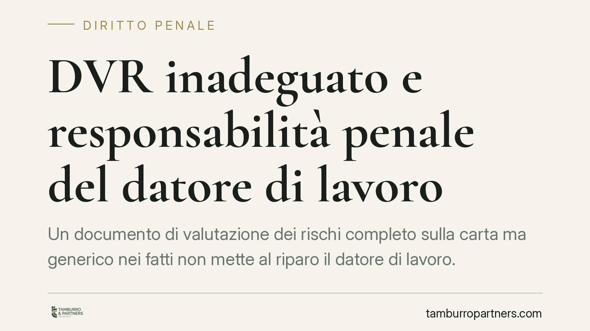

DVR inadeguato e responsabilità penale del datore di lavoro
Un documento di valutazione dei rischi completo sulla carta ma generico nei fatti non mette al riparo il datore di lavoro. Secondo un orientamento costante della Cassazione penale, affidare a un consulente la stesura del DVR non trasferisce la responsabilità sul suo contenuto. In caso di infortunio, chi risponde resta il datore. Vediamo perché e come ridurre il rischio.

Il principio
Un cantiere può apparire regolare sulla carta e rivelarsi pericoloso nella realtà. È la situazione tipica di un documento di valutazione dei rischi (DVR) formalmente redatto, ma privo di misure preventive concrete e calibrate sulle lavorazioni effettive.
La Quarta Sezione penale della Cassazione, con un orientamento ormai consolidato, ribadisce un punto netto: il datore di lavoro può affidare a un tecnico esterno la stesura materiale del DVR, ma non può delegarne la responsabilità sul contenuto. Se il documento è inadeguato e l'inadeguatezza contribuisce a determinare l'infortunio, la responsabilità penale resta in capo al datore.
Inquadramento normativo
L'art. 28 del D.lgs. 81/2008 definisce l'oggetto della valutazione dei rischi: deve riguardare tutti i rischi per la salute e la sicurezza, compresi quelli specifici dell'attività, e indicare le misure di prevenzione e protezione concrete, non formule generiche. Un DVR che si limiti a elencare adempimenti standard, senza riferirli alle lavorazioni e alle condizioni reali, non assolve l'obbligo di legge.
L'art. 17 del medesimo decreto colloca la valutazione dei rischi tra gli obblighi non delegabili del datore di lavoro. Qui sta la distinzione decisiva: la redazione materiale del documento può essere affidata a un consulente o al Responsabile del servizio di prevenzione e protezione (RSPP); la titolarità dell'obbligo e la responsabilità sul contenuto, invece, restano del datore.
Il nesso di causalità
Un DVR carente non fonda automaticamente la responsabilità penale. La giurisprudenza della Quarta Sezione richiede che la lacuna del documento sia eziologicamente collegata all'evento: occorre cioè che il rischio non valutato, o valutato in modo inadeguato, sia proprio quello che si è concretizzato nell'infortunio. Se la misura mancante avrebbe verosimilmente evitato o ridotto l'evento, il nesso causale sussiste.
Rileva anche il principio di affidamento, spesso invocato per limitare la colpa. In linea generale ciascun soggetto risponde della propria sfera di competenza. Ma rispetto a un obbligo non delegabile come la valutazione dei rischi, il datore non può invocare l'affidamento sul lavoro del consulente per liberarsi: la legge gli impone un controllo sul risultato, non solo la scelta di un tecnico competente.
E il consulente?
La posizione del consulente esterno va letta con cautela. Secondo l'orientamento sulla cosiddetta posizione di garanzia di fatto, un soggetto che assuma concretamente compiti di prevenzione può rispondere penalmente quando il suo apporto si inserisce nella catena causale dell'evento. Non è però una regola automatica: la responsabilità del professionista va accertata caso per caso, in relazione al ruolo effettivamente svolto e all'incidenza causale della sua condotta. La delega al consulente, in ogni caso, non sposta su di lui l'obbligo che la legge riserva al datore.
Implicazioni pratiche
Per l'impresa il messaggio è concreto: un DVR acquistato come modello e mai contestualizzato è un rischio, non una tutela. In sede penale, dopo un infortunio, il documento viene esaminato per verificare se descriveva i rischi reali e indicava misure adeguate. Un testo generico diventa prova a carico, non a discarico.
Lo stesso vale per dirigenti e preposti, titolari di obblighi propri di attuazione e vigilanza. La ripartizione interna delle funzioni va documentata con precisione, perché incide sull'individuazione delle responsabilità.
Cosa fare in concreto
- Verificate che il DVR descriva le lavorazioni reali: ogni rischio deve essere riferito alle attività effettivamente svolte, non a formule standard.
- Pretendete misure specifiche e attuabili: per ciascun rischio indicate la misura preventiva concreta, i tempi e i responsabili dell'attuazione.
- Non delegate il controllo: chi redige può essere un terzo, ma il datore deve leggere, comprendere e validare il contenuto.
- Aggiornate il documento a ogni variazione significativa di lavorazioni, macchinari o organizzazione, e dopo ogni infortunio o quasi-infortunio.
- Formalizzate deleghe e ruoli di dirigenti e preposti con atti scritti, data certa e poteri effettivi di spesa e organizzazione.
Consigliamo di sottoporre il DVR a una revisione periodica congiunta tra impresa, RSPP e consulente legale, così da allineare il documento alla realtà operativa e ridurre l'esposizione al rischio penale.
---
Contributo informativo a cura di Tamburro & Partners Avvocati - Avv. Giuseppe Tamburro. Non costituisce parere legale.
Ogni condominio ha una storia a sé.
Se gestisci un'amministrazione e vuoi un confronto su una specifica questione condominiale, scrivi allo studio. Ti rispondiamo entro un giorno lavorativo.